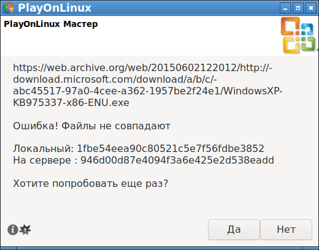
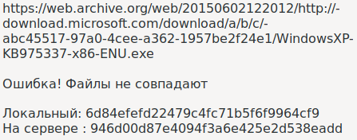
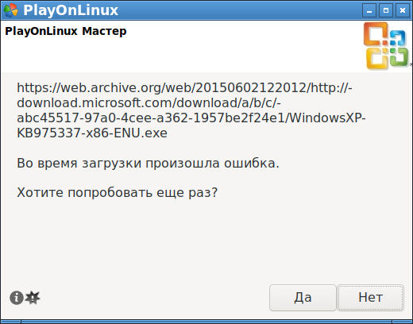
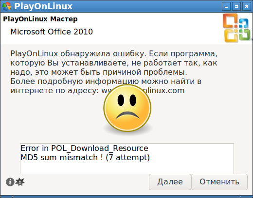
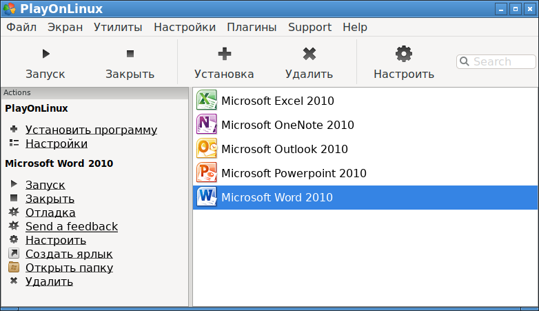
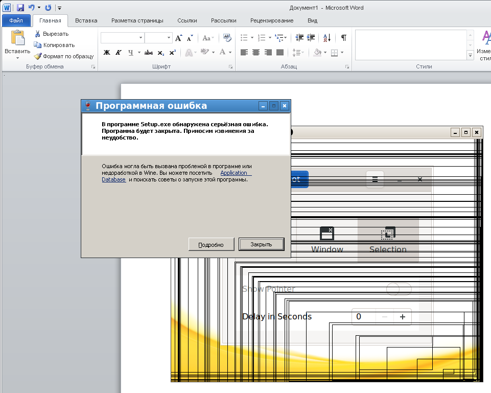
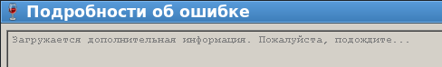
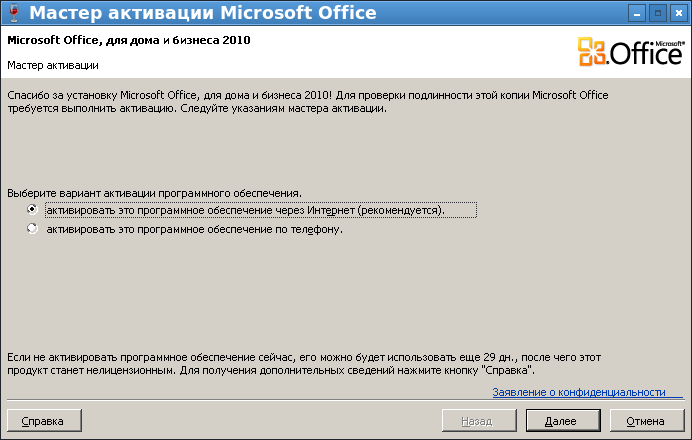
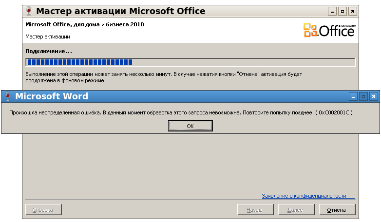
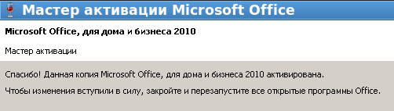

Здесь описана установка лицензионной версии Microsoft Office для дома и бизнеса 2010 в ОС Debian Linux 11 с применением штатного пакета playonlinux.
Примечание: попытки установки MS Office через wine v.5.0.3 (из стандартного репозитария Debian) в режимах 32-bit и 64-bit согласно рекомендациям с официального сайта:
https://appdb.winehq.org/objectManager.php?sClass=version&iId=17336
ни к чему не привели. Любая установка, и в режиме Windows XP, и в режиме Windows 7, с установленными дополнительными пакетами через winetricks в соответсвующий WINEPREFIX, все равно приводит к ошибке:
В программе msiexec.exe обнаружена серьезная ошибка.
Программа будет закрыта. Приносим извенения за неудобство.
Перебробовано было много вариантов, и результат - MS Office 2010 в wine 5.0.2 не устанавливается и, соответственно, не работает.
Решение оказалось в установке пакета playonlinux из стандартного репозитария Debian. Данный пакет во время своей работы хитрым образом устанавливает в отдельный каталог другую версию wine, в которой, согласно его базе данных, MS Office работоспособен. Так же в каталог эмулирующегося диска C доустанавливаются нужные для офиса пакеты и шрифты.
Установка Wine
Программа PlayOnLinux - это надстройка над wine. Поэтому вначале надо установить пакеты wine:
apt install wine wine64 winbind
Пакет winbind не указан в зависимостях wine, но нужен для правильной работы сетевой подсистемы эмулируемой Windows.
Установка PlayOnLinux
Установка PlayOnLinux происходит самым обычным образом:
apt install playonlinux
В Debian 11 установится версия PlayOnLinux 4.3.4. Данная программа имеет GUI-интерфейс и ее можно запустить из меню, но лучше на момент инсталляции офиса запускать PlayOnLinux
При запуске playlinux в строке статуса (внизу окошка) будет ошибка:
PlayOnLinux website is unavailable. Please check your connection
Или, при русской локали, ошибка будет такой:
Веб-сайт PlayOnLinux недоступен
Для исправления, нужно скачать файл цифровой подписи:
wget http://www.playonlinux.com/fix/force_update.signed
Это bash-скрипт, который нужно выполнить от обычного пользователя (не от root):
chmod 755 force_update.signed
./force_update.signed
Далее надо запустить PlayOnLinux в консоли, под обычным пользователем:
playonlinux
И нужно дождаться завершения синхронизации. В консоли должны появиться троки:
[update_check] Message: Updating list
[POL_Config_Write] Message: Config write: LAST_TIMESTAMP 1674721463
А строка состояния в GUI-интерфейсе станет пустой.
Далее необходимо выбрать установку MS Office 2010. В первых двух окошках с галками "Dont remind me anymore" просто нажимать далее. Потом указать место, откуда нужно взять exe-шник для установки (т. е. выбрать setup.exe).
Далее просто соглашаться со всеми окошками и запросами на установку дополнительных пакетов программ и шрифтов.
В какой-то момент может появиться следующая ошибка:

При разных повторных запросах почему-то приходит постоянно битый файл. Вот еще один пример, файл тот же, а локальная хеш-сумма другая (хеш-сумма считается по алгоритму MD5):

Файл может даже вообще не загрузиться:

[POL_Download_Resource] Message: Downloading resource https://web.archive.org/web/20150602122012/http://download.microsoft.com/download/a/b/c/abc45517-97a0-4cee-a362-1957be2f24e1/WindowsXP-KB975337-x86-ENU.exe
0012:fixme:msvcrt:__clean_type_info_names_internal (0x64083a50) stub
[POL_SetupWindow_question] Message: question answer: TRUE
Если поискать скачиваемый файл, то он будет найден здесь:
/home/user/.PlayOnLinux/ressources/WindowsXP-KB975337-x86-ENU.exe
Размер у него будет отличаться от нужного. Правильный размер 872 816 байт, а у данного файла будет меньше, например 15 002 байт.
Похоже, что Python-скрипты во внутрях PlayOnLinux почему-то не качают файл полностью. Зато обычный wget получает данный файл за пару секунд:
$ wget https://web.archive.org/web/20150602122012/http://download.microsoft.com/download/a/b/c/abc45517-97a0-4cee-a362-1957be2f24e1/WindowsXP-KB975337-x86-ENU.exe
--2023-01-26 11:57:32-- https://web.archive.org/web/20150602122012/http://download.microsoft.com/download/a/b/c/abc45517-97a0-4cee-a362-1957be2f24e1/WindowsXP-KB975337-x86-ENU.exe
Распознаётся web.archive.org (web.archive.org)… 207.241.237.3
Подключение к web.archive.org (web.archive.org)|207.241.237.3|:443... соединение установлено.
HTTP-запрос отправлен. Ожидание ответа… 200 OK
Длина: 872816 (852K) [application/octet-stream]
Сохранение в: «WindowsXP-KB975337-x86-ENU.exe»
WindowsXP-KB975337-x86-ENU 100%[========================================>] 852,36K 1022KB/s за 0,8s
2023-01-26 11:57:38 (1022 KB/s) - «WindowsXP-KB975337-x86-ENU.exe» сохранён [872816/872816]
Скачанный файл, пока висит откно ошибки, можно подменить через консоль (просто скопировать скачанный через wget екзешник в каталог /home/user/.PlayOnLinux/ressources/). Затем в окне ошибки нажать "Нет". Появится еще одно окно с ошибкой:

В этом окне надо нажать "Далее". Судя по логу, пакет WindowsXP-KB975337-x86-ENU.exe будет установлен, и процесс установки пойдет далее:
[POL_Download_Resource] Message: Downloading resource https://web.archive.org/web/20150602122012/http://download.microsoft.com/download/a/b/c/abc45517-97a0-4cee-a362-1957be2f24e1/WindowsXP-KB975337-x86-ENU.exe
[POL_SetupWindow_question] Message: question answer: FALSE
----- Здесь была подмена файла -----
[POL_Download_Resource] Error: MD5 sum mismatch ! (7 attempt)
----- Далее видно, что запуск KB975337 все таки происходит -----
[POL_System_CheckFS] Message: Checking filesystem for WindowsXP-KB975337-x86-ENU.exe
[POL_Wine] Message: Running wine-3.0.3 WindowsXP-KB975337-x86-ENU.exe /extract:C:\Tmp /q (Working directory : /home/user/.PlayOnLinux/ressources)
В конце установки будет сообщение, что при установке возникли ошибки и надо бы отправить баг-репорт в команду разработчиков PlayOnLinux. Если есть логин-пароль сервиса PlayOnLinux, ошибку можно отправить.
После этого Microsoft Office будет считаться установленным. Его компоненты появятся в списке установленных программ:

Однако первый запуск офиса 2010 покажет ошибку в окне первичной настройки:

В консоли будет следующий текст:
[POL_SetupWindow_Init] Message: Creating new window for pid 24931
[POL_SetupWindow_textbox_multiline] Message: textbox_multiline answer: - What were you doing when the proble[...]urred?
[POL_System_CheckFS] Message: Checking filesystem for WINWORD.EXE
[POL_Wine] Message: Running wine-3.0.3 WINWORD.EXE (Working directory : /home/xi/.PlayOnLinux/wineprefix/Office2010/drive_c/Program Files/Microsoft Office/Office14)
[POL_Wine] Message: Notice: PlayOnLinux deliberately disables winemenubuilder. See http://www.playonlinux.com/fr/page-26-Winemenubuilder.html
wine: Unhandled exception 0xc0000417 in thread 98 at address 0x102f7d16 (thread 0098), starting debugger...
Странно, но нажатие кнопки "Подробно" в окне ошибки не покажет никаких данных:

Однако, после закрытия окна с подробностями об ошибке, появится мастер активации Microsoft Office:

Активация через Интернет работать не будет, появится ошибка 0xC002001C:

На официальном сайте в списке кодов ошибок: https://learn.microsoft.com/ru-ru/office/troubleshoot/activation/office-activation-process-issues кода ошибки 0xC002001C не предусмотрено. Что она означает - непонятно.
Если выбрать активацию офиса через телефон, то в окне активации, при выборе страны Россия, вместо номера телефона будет написано:
Активация этого продукта по телефону более не поддерживается
Но на самом деле, даже в 2023 году активация по телефону работает. Просто нужно знать номер телефона активации продуктов Microsoft, и на январь 2023 года для России он следующий:
Москва, Россия
7 495 745 5445 - обычный
8 800 200 8002 - бесплатный
По данном у телефону отвечает робот, через него в тональном режиме вводится код активации, робот диктует ответ. Если все сделано правильно, Microsoft Office для дома и бизнеса 2010 будет активирован:

Все, MS Office зарегистрирован, можно работать.
Если Word долго запущен, может возникнуть ошибка winword.exe:
Unhandled exception: 0xe0000002 in 32-bit code (0x7b43de9c).
Register dump:
CS:0023 SS:002b DS:002b ES:002b FS:0063 GS:006b
EIP:7b43de9c ESP:0032c774 EBP:0032c7e8 EFLAGS:00000216( - -- I -A-P- )
EAX:7b428fa1 EBX:7b640000 ECX:7b43de10 EDX:00000000
ESI:00000000 EDI:00000000
Stack dump:
0x0032c774: 0032c7cc 0032c7b0 fc7b2900 e0000002
0x0032c784: 00000000 00000000 7b43de9c 00000000
0x0032c794: 0032c7e0 00000000 f7cf00eb 00000000
0x0032c7a4: 0032c7e0 7ffd8000 0032c930 0032c930
0x0032c7b4: 00000040 0032c908 00000028 0032c9dc
0x0032c7c4: 00000008 00000000 7bc83c96 00000002
Backtrace:
=>0 0x7b43de9c RaiseException+0x8c() in kernel32 (0x0032c7e8)
1 0x39cb3799 in mso (+0xcb3798) (0x0032c888)
2 0x7bc84119 server_select+0x298() in ntdll (0x0032c9b8)
3 0x7bc8ec50 wait_objects+0x5f() in ntdll (0x0032caf8)
4 0x7bc91f7a NtWaitForMultipleObjects+0x29() in ntdll (0x0032cb18)
5 0x7b479c02 WaitForMultipleObjectsEx.part+0x121() in kernel32 (0x0032cc98)
6 0x7b479e95 WaitForMultipleObjectsEx+0x54() in kernel32 (0x0032cce8)
7 0x7d8635b2 X11DRV_MsgWaitForMultipleObjectsEx+0xc1() in winex11 (0x0032cd48)
8 0x7e2d387e wait_message+0x2d() in user32 (0x0032cda8)
9 0x7e285a3d MsgWaitForMultipleObjectsEx.part+0x14c() in user32 (0x0032cf78)
10 0x7e287995 MsgWaitForMultipleObjectsEx+0x54() in user32 (0x0032cfc8)
11 0x7e2879df WaitMessage+0x2e() in user32 (0x0032d008)
12 0x390b779d in mso (+0xb779c) (0x0032d030)
13 0x394bbc99 in mso (+0x4bbc98) (0x0032d06c)
14 0x394bb353 in mso (+0x4bb352) (0x0032d0b8)
15 0x394bb022 in mso (+0x4bb021) (0x0032d0d0)
16 0x39620f37 in mso (+0x620f36) (0x0032d10c)
17 0x39ff8f68 in mso (+0xff8f67) (0x0032d9f8)
18 0x39a845a0 in mso (+0xa8459f) (0x0032da1c)
19 0x390b6234 in mso (+0xb6233) (0x0032da2c)
20 0x390b61ef in mso (+0xb61ee) (0x0032da44)
21 0x39030b78 in mso (+0x30b77) (0x0032da88)
22 0x3902d905 in mso (+0x2d904) (0x0032daa8)
23 0x3902d5a8 in mso (+0x2d5a7) (0x0032dac4)
24 0x390b5de9 in mso (+0xb5de8) (0x0032db24)
25 0x390b5ce1 in mso (+0xb5ce0) (0x0032db34)
26 0x390b34f6 in mso (+0xb34f5) (0x0032db9c)
27 0x390b3d73 in mso (+0xb3d72) (0x0032dbc4)
28 0x390b2df2 in mso (+0xb2df1) (0x0032dbd0)
29 0x3173c766 in wwlib (+0x6c765) (0x0032dbe4)
30 0x3173e114 in wwlib (+0x6e113) (0x0032dc60)
31 0x31738f5e in wwlib (+0x68f5d) (0x0032dc74)
32 0x31737386 in wwlib (+0x67385) (0x0032dc9c)
33 0x317346d9 in wwlib (+0x646d8) (0x0032fe0c)
34 0x30001625 in winword (+0x1624) (0x0032fe30)
35 0x300015aa in winword (+0x15a9) (0x0032fec0)
36 0x7b465cf2 call_process_entry+0x11() in kernel32 (0x0032fed8)
37 0x7b4673f6 start_process+0x105() in kernel32 (0x0032ffd8)
38 0x7b465cfe start_process_wrapper+0x9() in kernel32 (0x0032ffec)
0x7b43de9c RaiseException+0x8c in kernel32: addl $12,%esp
Modules:
Module Address Debug info Name (164 modules)
PE 5f0000- 94a000 Deferred msointl
PE 960000- 4e8a000 Deferred msores
PE 6f00000- 6f0d000 Deferred osetupps
PE 10000000-1041a000 Deferred office.odf
PE 30000000-3015d000 Export winword
PE 316d0000-3294f000 Export wwlib
PE 39000000-3a1ea000 Export mso
PE 3a700000-3a7f5000 Deferred wwintl
PE 40330000-4033d000 Deferred msoxmlmf
PE 42030000-4217f000 Deferred riched20
PE 42280000-43614000 Deferred oart
PE 437a0000-4394b000 Deferred gfx
PE 44020000-441b4000 Deferred ogl
PE 6bdc0000-6be7c000 Deferred msptls
PE 6be90000-6beb0000 Deferred osppc
PE 6bed0000-6c064000 Deferred osppcext
ELF 77400000-78f19000 Deferred libicudata.so.67
PE 79000000-79045000 Deferred mscoree
ELF 7a7f1000-7a9e0000 Deferred libicuuc.so.67
ELF 7b0a5000-7b273000 Deferred libxml2.so.2
ELF 7b400000-7b7f1000 Dwarf kernel32<elf>
\-PE 7b410000-7b7f1000 \ kernel32
ELF 7b913000-7ba00000 Deferred msxml3<elf>
\-PE 7b920000-7ba00000 \ msxml3
ELF 7bc00000-7bd09000 Dwarf ntdll<elf>
\-PE 7bc10000-7bd09000 \ ntdll
ELF 7bd34000-7be73000 Deferred actxprxy<elf>
\-PE 7bd50000-7be73000 \ actxprxy
ELF 7bec0000-7bf00000 Deferred winhttp<elf>
\-PE 7bed0000-7bf00000 \ winhttp
ELF 7c000000-7c004000 Deferred <wine-loader>
ELF 7c009000-7c027000 Deferred jsproxy<elf>
\-PE 7c010000-7c027000 \ jsproxy
ELF 7c045000-7c08f000 Deferred libxslt.so.1
ELF 7c248000-7c32f000 Deferred libgcrypt.so.20
ELF 7c32f000-7c400000 Deferred libzstd.so.1
ELF 7c414000-7c43c000 Deferred libgpg-error.so.0
ELF 7c43c000-7c460000 Deferred liblz4.so.1
ELF 7c460000-7c48c000 Deferred liblzma.so.5
ELF 7c48c000-7c498000 Deferred librt.so.1
ELF 7c498000-7c558000 Deferred libsystemd.so.0
ELF 7c558000-7c5ba000 Deferred libdbus-1.so.3
ELF 7c5ba000-7c5ed000 Deferred libk5crypto.so.3
ELF 7c5ed000-7c6c9000 Deferred libkrb5.so.3
ELF 7c6c9000-7c723000 Deferred libgssapi_krb5.so.2
ELF 7c723000-7c7c8000 Deferred libcups.so.2
ELF 7c7c8000-7c7df000 Deferred winscard<elf>
\-PE 7c7d0000-7c7df000 \ winscard
ELF 7c7f9000-7c83a000 Deferred winspool<elf>
\-PE 7c800000-7c83a000 \ winspool
ELF 7c83a000-7c91a000 Deferred crypt32<elf>
\-PE 7c840000-7c91a000 \ crypt32
ELF 7c91a000-7c95c000 Deferred rsaenh<elf>
\-PE 7c920000-7c95c000 \ rsaenh
ELF 7c95c000-7c9ea000 Deferred libgmp.so.10
ELF 7c9ea000-7ca33000 Deferred libhogweed.so.6
ELF 7ca33000-7ca7e000 Deferred libnettle.so.8
ELF 7ca7e000-7cc00000 Deferred libunistring.so.2
ELF 7cc00000-7ce26000 Deferred libgnutls.so.30
ELF 7ce2a000-7ce40000 Deferred libavahi-client.so.3
ELF 7ce40000-7ce62000 Deferred libidn2.so.0
ELF 7ce62000-7cfb7000 Deferred libp11-kit.so.0
ELF 7cfba000-7cfca000 Deferred libkrb5support.so.0
ELF 7cfca000-7cfe8000 Deferred bcrypt<elf>
\-PE 7cfd0000-7cfe8000 \ bcrypt
ELF 7cfe8000-7d014000 Deferred iphlpapi<elf>
\-PE 7cff0000-7d014000 \ iphlpapi
ELF 7d014000-7d046000 Deferred netapi32<elf>
\-PE 7d020000-7d046000 \ netapi32
ELF 7d046000-7d10c000 Deferred msvcrt<elf>
\-PE 7d060000-7d10c000 \ msvcrt
ELF 7d168000-7d19d000 Deferred secur32<elf>
\-PE 7d170000-7d19d000 \ secur32
ELF 7d29d000-7d2e9000 Deferred usp10<elf>
\-PE 7d2a0000-7d2e9000 \ usp10
ELF 7d2e9000-7d308000 Deferred libgcc_s.so.1
ELF 7d339000-7d350000 Deferred libtasn1.so.6
ELF 7d3bd000-7d3d9000 Deferred rasapi32<elf>
\-PE 7d3c0000-7d3d9000 \ rasapi32
ELF 7d3d9000-7d400000 Deferred sti<elf>
\-PE 7d3e0000-7d400000 \ sti
ELF 7d502000-7d50a000 Deferred libkeyutils.so.1
ELF 7d50a000-7d50f000 Deferred libcom_err.so.2
ELF 7d50f000-7d529000 Deferred libresolv.so.2
ELF 7d529000-7d561000 Deferred uxtheme<elf>
\-PE 7d530000-7d561000 \ uxtheme
ELF 7d5df000-7d5ef000 Deferred libavahi-common.so.3
ELF 7d5f6000-7d60a000 Deferred sensapi<elf>
\-PE 7d600000-7d60a000 \ sensapi
ELF 7d60a000-7d611000 Deferred libnss_dns.so.2
ELF 7d611000-7d619000 Deferred libxfixes.so.3
ELF 7d619000-7d626000 Deferred libxcursor.so.1
ELF 7d626000-7d63a000 Deferred libxi.so.6
ELF 7d63a000-7d63f000 Deferred libxcomposite.so.1
ELF 7d63f000-7d64c000 Deferred libxrandr.so.2
ELF 7d64c000-7d658000 Deferred libxrender.so.1
ELF 7d658000-7d65f000 Deferred libxxf86vm.so.1
ELF 7d65f000-7d664000 Deferred libxinerama.so.1
ELF 7d664000-7d673000 Deferred libmd.so.0
ELF 7d673000-7d68b000 Deferred libbsd.so.0
ELF 7d68b000-7d6b9000 Deferred libxcb.so.1
ELF 7d6b9000-7d80b000 Deferred libx11.so.6
ELF 7d80c000-7d816000 Deferred libffi.so.7
ELF 7d83c000-7d8d2000 Dwarf winex11<elf>
\-PE 7d850000-7d8d2000 \ winex11
ELF 7d8d2000-7da00000 Deferred comctl32<elf>
\-PE 7d8e0000-7da00000 \ comctl32
ELF 7da00000-7dc58000 Deferred shell32<elf>
\-PE 7da10000-7dc58000 \ shell32
ELF 7dc58000-7dc5f000 Deferred libxdmcp.so.6
ELF 7dc5f000-7dc64000 Deferred libxau.so.6
ELF 7dc64000-7dc7a000 Deferred libxext.so.6
ELF 7dc7a000-7dca0000 Deferred cabinet<elf>
\-PE 7dc80000-7dca0000 \ cabinet
ELF 7dca0000-7dcda000 Deferred ws2_32<elf>
\-PE 7dcb0000-7dcda000 \ ws2_32
ELF 7dcda000-7dd02000 Deferred mpr<elf>
\-PE 7dce0000-7dd02000 \ mpr
ELF 7dd02000-7dd83000 Deferred wininet<elf>
\-PE 7dd10000-7dd83000 \ wininet
ELF 7dd83000-7ddfa000 Deferred shlwapi<elf>
\-PE 7dd90000-7ddfa000 \ shlwapi
ELF 7ddfa000-7de9b000 Deferred urlmon<elf>
\-PE 7de10000-7de9b000 \ urlmon
ELF 7de9b000-7dfc4000 Deferred msi<elf>
\-PE 7deb0000-7dfc4000 \ msi
ELF 7dfc4000-7dfea000 Deferred imm32<elf>
\-PE 7dfd0000-7dfea000 \ imm32
ELF 7e01c000-7e04a000 Deferred libexpat.so.1
ELF 7e04a000-7e097000 Deferred libfontconfig.so.1
ELF 7e097000-7e0ba000 Deferred libbrotlicommon.so.1
ELF 7e0ba000-7e0c8000 Deferred libbrotlidec.so.1
ELF 7e0c8000-7e108000 Deferred libpng16.so.16
ELF 7e108000-7e1cf000 Deferred libfreetype.so.6
ELF 7e200000-7e408000 Dwarf user32<elf>
\-PE 7e210000-7e408000 \ user32
ELF 7e408000-7e426000 Deferred libz.so.1
ELF 7e426000-7e43a000 Deferred msimg32<elf>
\-PE 7e430000-7e43a000 \ msimg32
ELF 7e43a000-7e576000 Deferred oleaut32<elf>
\-PE 7e450000-7e576000 \ oleaut32
ELF 7e576000-7e5fd000 Deferred rpcrt4<elf>
\-PE 7e580000-7e5fd000 \ rpcrt4
ELF 7e5fd000-7e764000 Deferred ole32<elf>
\-PE 7e610000-7e764000 \ ole32
ELF 7e764000-7e8b4000 Deferred gdi32<elf>
\-PE 7e770000-7e8b4000 \ gdi32
ELF 7e8b4000-7e986000 Deferred msvcr90<elf>
\-PE 7e8d0000-7e986000 \ msvcr90
ELF 7ee00000-7ee0a000 Deferred libuuid.so.1
ELF 7ee0a000-7ee22000 Deferred wtsapi32<elf>
\-PE 7ee10000-7ee22000 \ wtsapi32
ELF 7ee22000-7ee3c000 Deferred version<elf>
\-PE 7ee30000-7ee3c000 \ version
ELF 7ee3c000-7eeb6000 Deferred advapi32<elf>
\-PE 7ee50000-7eeb6000 \ advapi32
ELF 7eeb6000-7eecb000 Deferred libnss_files.so.2
ELF 7eecb000-7efcf000 Deferred libm.so.6
ELF f7aef000-f7af5000 Deferred libdl.so.2
ELF f7af5000-f7cde000 Deferred libc.so.6
ELF f7cde000-f7d00000 Deferred libpthread.so.0
ELF f7d31000-f7ee9000 Dwarf libwine.so.1
ELF f7eeb000-f7f17000 Deferred ld-linux.so.2
ELF f7f1b000-f7f1d000 Deferred [vdso].so
Threads:
process tid prio (all id:s are in hex)
00000008 (D) C:\Program Files\Microsoft Office\Office14\WINWORD.EXE
000000f7 0
00000111 0
00000101 0
000000b0 0
000000af 0
000000ae 0
000000ad 0
000000ac 0
000000ab 0
000000aa 0
000000a8 0
000000a7 0
000000a6 0
000000a5 0
000000a4 0
000000a3 0
000000a2 0
00000093 0
00000091 0
00000090 0
0000007d 0
0000007c 0
00000044 -2
00000009 0 <==
0000000e services.exe
00000104 0
00000086 0
00000035 0
0000002d 0
00000028 0
00000023 0
0000001b 0
00000010 0
0000000f 0
00000019 winedevice.exe
00000020 0
0000001d 0
0000001c 0
0000001a 0
00000021 plugplay.exe
00000025 0
00000024 0
00000022 0
00000026 svchost.exe
0000003d 0
0000002a 0
00000029 0
00000027 0
0000002b winedevice.exe
00000032 0
0000002f 0
0000002e 0
0000002c 0
00000033 rpcss.exe
0000007e 0
00000039 0
00000038 0
00000037 0
00000036 0
00000034 0
0000003e explorer.exe
00000042 0
00000041 0
00000040 0
0000003f 0
00000084 svchost.exe
0000008a 0
00000089 0
00000088 0
00000087 0
00000085 0
00000102 OSPPSVC.EXE
0000010c 0
0000010b 0
0000010a 0
00000108 0
00000107 0
00000106 0
00000105 0
00000103 0
00000100 DW20.EXE
00000114 0
000000f4 0
000000ee winedbg.exe
000000ed 0
System information:
Wine build: wine-3.0.3
Platform: i386
Version: Windows XP
Host system: Linux
Host version: 5.18.0-2-amd64
В этом случае надо просто перезапустить Word.